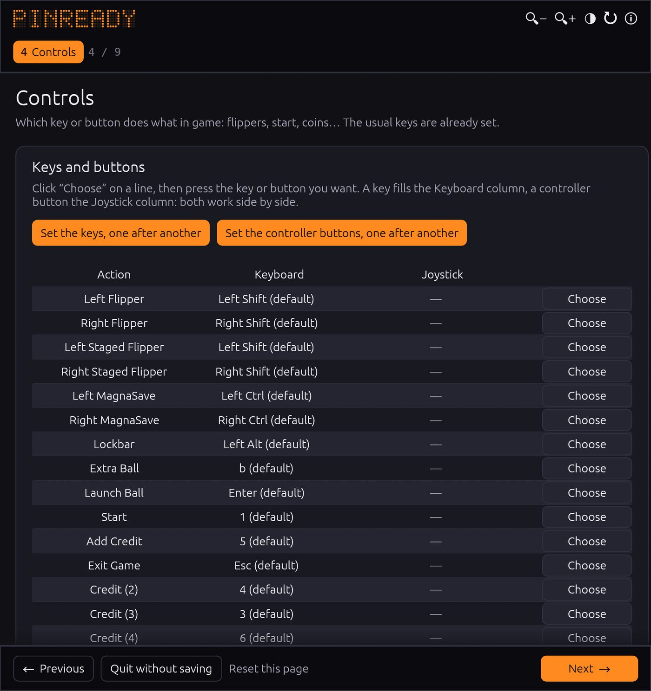
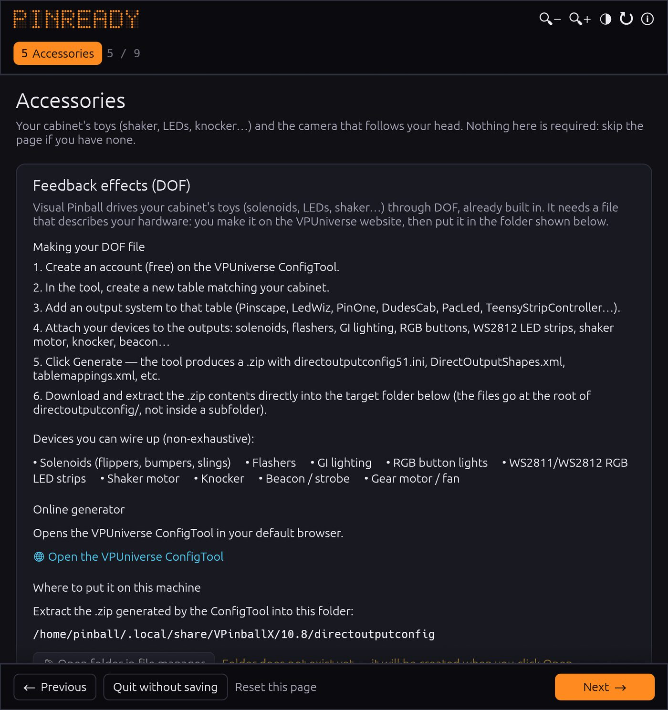

O assistente de configuração
Na primeira vez que inicia o PinReady, um assistente guia-o por nove páginas. Cada opção tem um pequeno marcador de informação: passe o rato por cima, ou clique nele num cabinet, para ver uma explicação em linguagem simples.
As suas respostas são escritas em VPinballX.ini, o ficheiro de definições do Visual Pinball, e os comentários desse ficheiro são mantidos. Se o ficheiro ainda não existir, o PinReady pede primeiro ao Visual Pinball que crie o seu ficheiro predefinido completo e depois acrescenta as suas escolhas. Pode reabrir o assistente a qualquer momento a partir do botão Configuração do lançador ou com pinready --config: cada campo mostra as suas definições atuais. A maior parte das definições também pode ser alterada durante o jogo, a partir do menu do Visual Pinball em F12.
Repor a configuração deita fora todas as respostas, põe de lado o VPinballX.ini global como VPinballX.ini.reset-backup e recomeça na primeira página. As suas mesas não são tocadas.
1. Ecrãs

A primeira página mostra o sistema detetado (por exemplo Ubuntu 24.04 LTS · X11 · GNOME) para que os relatórios de erros tragam sempre o seu contexto, permite escolher o idioma da interface e instala o Visual Pinball se for preciso.
- Número de ecrãs: 1 para um computador de secretária, 3 ou 4 para um pincab completo (campo de jogo, backglass, DMD e um topper opcional).
- Funções: cada ecrã é listado com o nome, a resolução, a taxa de atualização (Hz) e o tamanho físico. O PinReady sugere uma função a partir do tamanho dos ecrãs: o maior passa a ser o campo de jogo, depois o backglass, o DMD e o topper. Altere qualquer função na respetiva lista, ou defina um ecrã como Não utilizado.
- Modo de visualização: Secretária (em janela, para um computador normal), Cabinet (o campo de jogo desenhado para um ecrã deitado, com backglass e DMD nos seus próprios ecrãs) ou Ecrã único completo (campo de jogo e backglass num só ecrã alto). Passa para Cabinet a partir de 2 ecrãs, e pode sempre alterá-lo.
- Dispositivo DMD externo (ZeDMD, PinDMD…): marque-o se tiver um ecrã de pontuações físico; o Visual Pinball deteta-o quando uma mesa arranca.
- Desativar o ecrã tátil: desliga a sobreposição tátil do VPX, útil quando o campo de jogo não é um ecrã tátil ou quando controla o cabinet à distância.
- Dimensões do cabinet: largura e altura da lockbar, inclinação do campo de jogo, a sua altura e o sítio onde se coloca. Arraste as pegas no desenho ou escreva os valores; dão à vista 3D a perspetiva certa.
2. Imagem

Definições gráficas do campo de jogo. O conselho da página: comece pelas predefinições e depois ajuste à sua máquina.
- Sincronização: Sem sincronização, Sincronização vertical, Sincronização adaptativa ou Frame pacing, a predefinição do Visual Pinball. Cada opção explica o compromisso entre fluidez e atraso nos comandos.
- Limite de FPS: Máx. por predefinição, que segue a taxa de atualização do ecrã do campo de jogo para que nenhuma imagem seja desenhada mais depressa do que o ecrã a consegue mostrar. Carregue em Escolher um número para definir o seu próprio limite. Se o seu ecrã consegue mais do que a página indica, defina primeiro a taxa de atualização nas definições de ecrã do sistema (o PinReady não a pode alterar) e depois volte.
- Comprimir texturas (ativado por predefinição) empacota as imagens da mesa para usar menos memória gráfica, à custa de um primeiro carregamento de cada mesa ligeiramente mais longo.
- Qualidade de imagem: supersampling, MSAA, anti-aliasing de pós-processamento (FXAA e outros), nitidez, reflexos e tamanho máximo das texturas.
- Mostrar FPS (ativado por predefinição) mostra um contador de imagens no jogo, útil para verificar as definições logo a seguir à configuração.
- Bola redonda (ativado por predefinição) evita que a bola pareça ligeiramente oval quando se move depressa. Puramente estético.
- Efeitos visuais: sombras suaves (oclusão ambiente), brilho à volta das luzes intensas, desfoque de movimento da bola, texturas mais nítidas em ângulo, reflexos da mesa inteira, imagens pré-renderizadas e suavidade da bola e das rampas. Cada um mostra o valor recomendado; se um jogo engasgar, desligue primeiro os do fim da lista.
3. 3D

Dois blocos opcionais, ambos desativados por predefinição porque um cabinet não precisa deles.
- Realidade virtual (VR): jogar com um headset. É preciso um headset e um programa de VR (um runtime OpenXR como o SteamVR ou o Monado) a funcionar no computador. Depois de ativada, escolhe quando a VR arranca, a taxa de atualização do headset, o que o ambiente de trabalho mostra entretanto e o encaminhamento de áudio.
- 3D estereoscópico: uma imagem 3D para uma televisão 3D ou óculos. Depois de ativado, escolhe o formato 3D e ajusta a separação dos olhos, o brilho e a saturação das cores.
4. Comandos

Cada ação do Visual Pinball tem duas colunas, Teclado e Joystick, e ambas funcionam lado a lado. Clique em Mapear e prima uma tecla ou um botão: uma tecla preenche a coluna do teclado, um botão do joystick preenche a coluna do joystick. Mapear tudo automaticamente percorre todas as ações de uma só vez. As ações essenciais (flippers, MagnaSave, início, crédito, lançar bola…) aparecem primeiro; as avançadas estão a um clique de distância. O PinReady avisa-o quando uma tecla já é usada por outra ação.
Placas de comando de pinball. Quando é detetada uma placa Pinscape KL25Z, Pinscape Pico, DudesCab ou PinOne, o PinReady escolhe o perfil correspondente e preenche a coluna do joystick com a disposição de botões de fábrica da placa; o Visual Pinball trata depois sozinho do plunger e do nudge pelo acelerómetro. Escolha Nenhum para mapear todos os botões você mesmo. Um gamepad detetado também pode ser usado para os flippers, o plunger e o nudge.
KL25Z (KL Shield V5.1 / Brain / Rig Master)
| Botão | Etiqueta na placa | Ação do VPX |
|---|---|---|
| 0 | START | Start |
| 1 | EXTRA-B | ExtraBall |
| 2 | COIN1 | Credit1 |
| 3 | COIN2 | Credit2 |
| 4 | L BALL | LaunchBall |
| 5 | EXIT | ExitGame |
| 7 | L FLIPP | LeftFlipper + LeftStagedFlipper |
| 8 | R FLIPP | RightFlipper + RightStagedFlipper |
| 9 | L MAGNA | LeftMagna |
| 10 | R MAGNA | RightMagna |
| 11 | FIRE | Lockbar |
| 13 | DOOR | CoinDoor |
| 14 | SERVICE EXIT | Service1 |
| 15 | SERVICE - | Service2 |
| 16 | SERVICE + | Service3 |
| 17 | ENTER | Service4 |
| 19 | VOL- | VolumeDown |
| 20 | VOL+ | VolumeUp |
Pinscape Pico (OpenPinballDevice)
| Botão | Etiqueta na placa | Ação do VPX |
|---|---|---|
| 0 | Iniciar | Start |
| 1 | Sair | ExitGame |
| 2 | Bola extra | ExtraBall |
| 3 | Moeda 1 | Credit1 |
| 4 | Moeda 2 | Credit2 |
| 5 | Moeda 3 | Credit3 |
| 6 | Moeda 4 | Credit4 |
| 7 | Lançar bola | LaunchBall |
| 8 | Disparar | Lockbar |
| 9 | Flipper esquerdo | LeftFlipper |
| 10 | Flipper direito | RightFlipper |
| 11 | Flipper superior esquerdo | LeftStagedFlipper |
| 12 | Flipper superior direito | RightStagedFlipper |
| 13 | MagnaSave esquerdo | LeftMagna |
| 14 | MagnaSave direito | RightMagna |
| 16 | Slam Tilt | SlamTilt |
| 17 | Porta das moedas | CoinDoor |
| 18 | Serviço: cancelar | Service1 |
| 19 | Serviço: baixo | Service2 |
| 20 | Serviço: cima | Service3 |
| 21 | Serviço: entrar | Service4 |
| 22 | Nudge esquerdo | LeftNudge |
| 23 | Nudge frontal | CenterNudge |
| 24 | Nudge direito | RightNudge |
| 25 | Volume + | VolumeUp |
| 26 | Volume - | VolumeDown |
DudesCab (Arnoz)
| Botão | Etiqueta na placa | Ação do VPX |
|---|---|---|
| 0 | Iniciar | Start |
| 1 | Bola extra | ExtraBall |
| 2 | Moeda 1 | Credit1 |
| 3 | Moeda 2 | Credit2 |
| 4 | Lançar bola | LaunchBall |
| 5 | Voltar | ExitGame |
| 7 | Flipper esquerdo | LeftFlipper + LeftStagedFlipper |
| 8 | Flipper direito | RightFlipper + RightStagedFlipper |
| 9 | Magna esquerdo | LeftMagna |
| 10 | Magna direito | RightMagna |
| 12 | Disparar | Lockbar |
| 13 | Porta | CoinDoor |
| 14 | Sair da ROM | Service1 |
| 15 | ROM - | Service2 |
| 16 | ROM + | Service3 |
| 17 | ROM Intro | Service4 |
| 18 | VOL - | VolumeDown |
| 19 | VOL + | VolumeUp |
CSD PinOne
| Botão | Etiqueta na placa | Ação do VPX |
|---|---|---|
| 0 | VPX 1 | RightFlipper |
| 1 | VPX 2 | RightMagna |
| 2 | VPX 3 | LeftFlipper |
| 3 | VPX 4 | LeftMagna |
| 4 | VPX 5 | ExtraBall |
| 5 | VPX 6 | Start |
| 6 | VPX 7 | Credit1 |
| 7 | VPX 8 | ExitGame |
| 8 | VPX 9 | Lockbar |
| 15 | VPX 16 | VolumeUp |
| 16 | VPX 17 | VolumeDown |
| 17 | VPX 18 | CoinDoor |
| 18 | VPX 19 | Service1 |
| 19 | VPX 20 | Service2 |
| 20 | VPX 21 | Service3 |
| 21 | VPX 22 | Service4 |
| 23 | VPX 24 | LaunchBall |
Os números dos botões são os que o SDL indica, contados a partir de 0. Os botões que um perfil deixa sem mapeamento não são listados.
5. Accesorios

Efectos DOF (luces y juguetes)
VPX 10.8.1 standalone incluye DOF (Direct Output Framework), que controla los solenoides, las luces, el motor de vibración, el knocker o la baliza de un cabinet. Solo necesita una configuración que describa tu hardware. La página te guía paso a paso:
- Crea una cuenta gratuita en el ConfigTool de VPUniverse.
- Crea una mesa que corresponda a tu cabinet, añade su sistema de salida (Pinscape, LedWiz, PinOne, DudesCab, PacLed, TeensyStripController…) y conecta tus dispositivos a las salidas.
- Pulsa Generar, descarga el zip y extráelo en la carpeta de destino: el botón Abrir carpeta en el gestor de archivos te lleva hasta ella.
- Activa DOF: Visual Pinball se entrega con todos los plugins desactivados, así que nada se dispara en el juego hasta que lo hagas.
PinReady también puede buscar tu placa de salida por USB e indicarte qué tipo de controlador elegir en el ConfigTool. En Linux muestra, copia o instala las reglas udev que dan acceso a la placa. Un probador de salidas que activa cada salida por turnos, con una parada de seguridad integrada, de momento solo funciona con un simulador.
Seguimiento de cabeza
Para cabinets con un Kinect o una cámara en el backglass o en el topper: la perspectiva de la mesa sigue tu cabeza. Con un clic se descarga el plugin de seguimiento de cabeza y su demo, se activa el plugin, se cambia Visual Pinball al modo de vista Ventana que necesita y se abre la demo para que instales los controladores de la cámara y compruebes que te detecta. No disponible en Mac con Intel.
6. Tilt / Nudge


Ajustes del acelerómetro que detecta cuándo sacudes (nudge) el cabinet.
- Tipo de sensor de nudge: Mando para el stick de un gamepad, Sensor de intención para cabinets con una placa acelerómetro como Pinscape o DudesCab (ignora las vibraciones pequeñas y convierte un empujón real en un nudge), Sensor del cabinet para un sensor rápido y limpio cuyas lecturas se aplican tal como se miden.
- Fuerza: con qué intensidad empuja la bola una sacudida. En la práctica, el único ajuste que merece la pena afinar.
- Zona muerta: las lecturas minúsculas por debajo de este nivel se ignoran, para que las vibraciones y el ruido del sensor no muevan la bola.
- Rango del acelerómetro: es un dato de tu placa, no una preferencia. PinReady lo lee de la placa cuando esta lo publica, y te avisa si el valor seleccionado no coincide.
- Umbral de TILT: cuánto puedes dar de nudge antes de que el juego marque un tilt.
Sacude el cabinet y mira la vista en directo: un punto muestra cada sacudida frente a unos anillos que representan la zona muerta, el umbral de nudge y el tilt; cruzar el anillo rojo significa TILT. PinReady también guarda el pico medido, te avisa cuando el ángulo de tilt queda fuera del alcance del sensor y te pide que compruebes en qué sentido está montada la placa, ya que una placa girada al revés intercambia o invierte las direcciones del nudge.
La página simula lo que hace Visual Pinball con cada nudge, con el propio modelo de cabinet y los valores por defecto de VPX. Un punto azul muestra el péndulo virtual: VPX marca el tilt con el péndulo, que acumula una serie de golpes, mientras que el punto rojo es solo el sensor. El péndulo toca el círculo de tilt exactamente cuando VPX marcaría tilt. Para probarlo, balancea el cabinet de lado a lado con una cadena de golpes fuertes, cada uno un poco más fuerte que el anterior.
Cómo interpreta VPX un nudge
- De lado es más sensible que de delante hacia atrás. VPX multiplica la lectura lateral por 4/3, y un empujón lateral suele ser más fácil de dar que uno hacia delante.
- Un empujón cuenta, un tirón nunca. VPX busca la intención de empujar el cabinet alejándolo de ti. Lo que viene hacia ti se pone a cero, por fuerte que sea, así que el cabinet que vuelve tras tu empujón nunca es un segundo nudge: simplemente se asienta. La página dibuja esta zona hacia el jugador.
- Un golpe solo se registra por encima del umbral de entrada (1 m/s²). VPX construye entonces un empujón corto de 25 ms tan fuerte como el pico que midió; después ya no se usa la lectura en bruto del sensor.
- Una serie de golpes se suma en el péndulo, así que cuatro golpes seguidos pueden provocar un tilt que uno solo nunca provocaría.
Las matemáticas que hay detrás
La página muestra las fórmulas que calcula VPX, un bloque por tipo de sensor (el tipo seleccionado aparece abierto), y luego el modelo del cabinet y la plomada que comparten. Unidades: m/s² para las aceleraciones, ms para los tiempos, ° para el ángulo de tilt. Los bloques están en la propia aplicación, en la página Nudge & tilt.
7. Audio

Visual Pinball reproduce el sonido en dos dispositivos, y PinReady enumera tus tarjetas de sonido para cada uno:
- Backglass: música, voces y sonidos generales del juego.
- Playfield: los sonidos mecánicos (flippers, bumpers, bola rodando). Para sonido envolvente o SSF, debe ser la salida multicanal.
Modo de salida del playfield. PinReady preselecciona un modo según el número de canales que detecta, y muestra un diagrama de la distribución de altavoces con el cableado que requiere.
| Modo | Para |
|---|---|
| 2 canales — Estéreo frontal | Estéreo normal, con los dos altavoces en la parte delantera del cabinet. |
| 2 canales — Estéreo trasero (lockbar) | Estéreo normal, con los dos altavoces cerca de la lockbar, junto al jugador. |
| 5.1 — Traseros en la lockbar | Añade posicionamiento de delante hacia atrás; canales traseros en la lockbar. Necesita una tarjeta de sonido de 6 canales. |
| 5.1 — Frontales en la lockbar | Igual, con los canales frontales en la lockbar. Elige el que corresponda a tu cableado. |
| SSF — Laterales y traseros en la lockbar (Heredado) | Surround Sound Feedback con la mezcla antigua. |
| SSF — Laterales y traseros en la lockbar (Nuevo) | Surround Sound Feedback con la mezcla más reciente, recomendado. |
Cableado para una tarjeta de sonido 7.1, la configuración SSF recomendada (los colores de los conectores pueden variar de una tarjeta a otra):
| Conector | Canales | Conexión en el cabinet |
|---|---|---|
| Verde (Frontal) | FL / FR | Altavoces del backglass (música) o sistema 2.1 |
| Negro (Trasero) | BL / BR | Excitadores superiores del playfield (lado del backglass) |
| Gris (Lateral) | SL / SR | Excitadores inferiores del playfield (lado de la lockbar / del jugador) |
| Naranja (Central/Sub) | FC / LFE | Subwoofer o bass shaker (opcional) |
Volúmenes y pruebas. Ajusta los volúmenes de la música y del playfield y luego comprueba el cableado: la prueba 1 reproduce música en bucle en el backglass con un balance izquierda/derecha; la prueba 2 reproduce un sonido en cada altavoz del playfield por turnos y hace recorrer una bola rodando de arriba abajo y de izquierda a derecha. Si la bola se mueve en sentido contrario de delante hacia atrás, cambia el modo de salida; si es de izquierda a derecha, revisa el cableado. Una tarjeta de sonido con solo 3 conectores (verde, rosa, azul) a menudo se puede cambiar a 5.1 o 7.1: consulta las guías para Linux, Windows y macOS.
8. Mesas

Elige la carpeta que contiene tus mesas, una subcarpeta por mesa: la estructura que usa Visual Pinball 10.8.1.
Tables/
└── Table Name/
├── Table Name.vpx table file (required)
├── Table Name.directb2s backglass (optional)
├── Table Name.ini per-table settings (optional)
├── Table Name.vbs script patch (optional)
├── medias/launcher.png launcher picture (optional)
├── pinmame/roms/<rom>.zip ROM (required for ROM tables)
├── altsound/<rom>/ alt-sound pack (optional)
├── pupvideos/<rom>/ PinUP Player videos (optional)
├── serum/<rom>/<rom>.crz Serum colorization (optional)
└── vni/<rom>/<rom>.vni VNI colorization, with .pal (optional)Se admite la colorización del DMD en los formatos Serum (.crz) y VNI (.vni + .pal); los formatos propietarios como .pac no.
- Pasa tu colección a la nueva estructura. Indica a PinReady una carpeta (una colección de mesas, una instalación antigua de VPX, incluso un disco entero). Indexa todo lo que contiene y luego da a cada mesa su propia carpeta con la ROM, el backglass, el pack PUP, el alt-sound, la colorización y la música que le pertenecen. Si tus mesas ya tienen una carpeta cada una, se quedan donde están y se añaden los archivos que falten. Haz primero una simulación para ver una vista previa y después elige copiar (seguro) o mover los archivos.
- Compatibilidad con Visual Pinball Standalone (desactivada por defecto): PinReady reconoce el script integrado en cada mesa y, cuando Le-Syl21/vpx-standalone-scripts tiene un parche para ella, coloca el
.vbsparcheado junto al.vpx. Un.vbstuyo se conserva como<table>.pre_standalone.vbs. - Enriquecimiento del catálogo (activado por defecto): relaciona cada mesa con la Virtual Pinball Spreadsheet y descarga una imagen de backglass y una melodía de audio desde VPinMediaDB en la carpeta
mediasde la mesa. La primera sincronización descarga unos 7 MB de datos del catálogo, más unos pocos MB por cada mesa encontrada. Desactívalo en un cabinet sin conexión.
9. Sistema

Comodidades opcionales, más adecuadas para un cabinet dedicado:
- Iniciar PinReady automáticamente al arrancar el equipo.
- Accesos directos en el menú y asociación de archivos
.vpx: añade PinReady y Visual Pinball al menú de aplicaciones (GNOME, KDE o XFCE en Linux, Launchpad en macOS, menú Inicio en Windows) y abre los archivos.vpxcon Visual Pinball. Desmárcalo y termina de nuevo el asistente para quitarlo. - Acceso directo en el escritorio y, en GNOME, fijar en el dock.
- Réplica autoalojada: obtén los parches de script y la base de datos de medios desde tu propio servidor en lugar de GitHub.